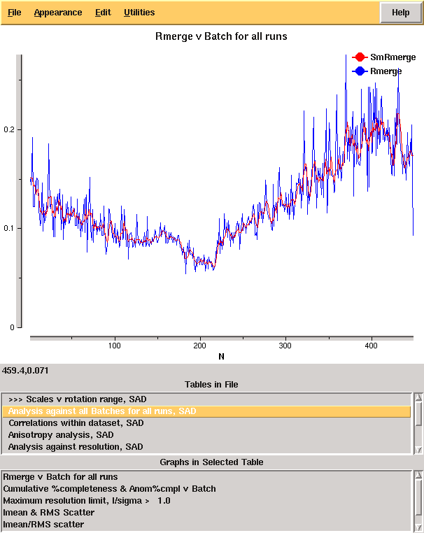
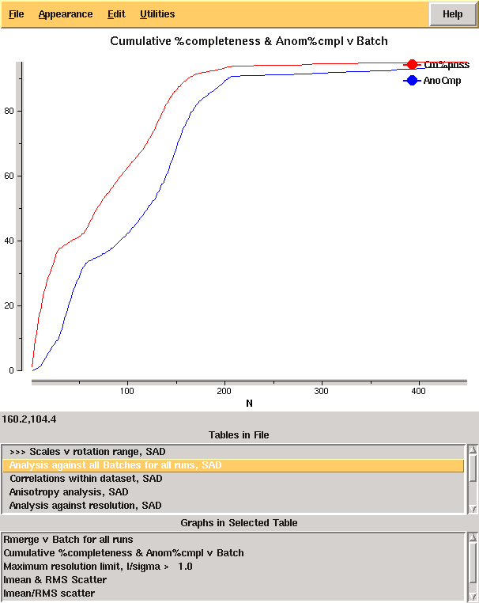

Introductory example¶
The most straightforward way to discuss the operation of the program is through demonstrations with real examples. The first of these is a dataset from a DNA / ligand complex recorded at Diamond Light Source as part of ongoing research. The structure includes barium which may be used for phasing, and the data were recorded as a single sweep. As may be seen from Figure 2, the quality of diffraction was not ideal, and radiation damage was an issue. Initially the data were processed with:
xia2 pipeline=3d -atom Ba /here/are/my/data
giving the merging statistics shown below:
High resolution limit
1.25
6.45
1.25
Low resolution limit
18.85
18.85
1.27
Completeness
95.2
60.1
70.2
Multiplicity
12.2
8.4
4.8
I/sigma
12.3
18.5
2.6
Rmerge
0.113
0.096
0.564
Rmeas(I)
0.129
0.118
0.633
Rmeas(I+/-)
0.121
0.105
0.679
Rpim(I)
0.034
0.038
0.267
Rpim(I+/-)
0.043
0.041
0.368
Wilson B factor
12.131
Anomalous completeness
93.3
52.6
58.0
Anomalous multiplicity
6.4
5.0
2.0
Anomalous correlation
0.544
0.791
-0.297
Anomalous slope
1.085
0.000
0.000
Total observations
118588
529
1634
Total unique
9749
63
337
From these it is clear that there is something wrong: it is very unusual to have near atomic resolution diffraction with ∼10% Rmerge in the low resolution bin. The most likely reasons are incorrect assignment of the pointgroup and radiation damage - the latter of which is clear from the analysis of Rmerge as a function of image number:
From the cumulative completeness as a function of frame number it is clear that the data were essentially complete after approximately 200 frames, though the low resolution completeness is poor:
Modifying input¶
From the example it would seem sensible to investigate processing only
the first 200 of the 450 images. While it is usual to limit the batch range in
scaling when processing the data manually, xia2 is not set up to work like
this as decisions made for the full data set (e.g. scaling model to use) may
differ from those for the subset - we therefore need to rerun the whole xia2
job after modifying the input. It is easy to do this using the
image=/path/to/image_001.img:start:end syntax:
xia2 pipeline=3d image=/dls/i02/data/2011/mx1234-5/K5_M1S3_3_001.img:1:200
giving the following merging statistics:
High resolution limit
1.22
6.34
1.22
Low resolution limit
19.62
19.62
1.24
Completeness
86.9
49.1
37.8
Multiplicity
5.3
4.9
1.7
I/sigma
20.1
37.0
2.3
Rmerge
0.036
0.020
0.355
Rmeas(I)
0.060
0.038
0.448
Rmeas(I+/-)
0.043
0.023
0.491
Rpim(I)
0.023
0.014
0.297
Rpim(I+/-)
0.022
0.011
0.339
Wilson B factor
10.70
Anomalous completeness
77.7
41.0
18.3
Anomalous multiplicity
2.7
3.5
0.5
Anomalous correlation
0.779
0.931
0.000
Anomalous slope
1.553
0.000
0.000
Total observations
50875
272
342
Total unique
9552
55
199
These are clearly much more internally
consistent and give nice results from experimental phasing though
with very poor low resolution completeness. At the same time we may wish
to adjust the resolution limits to give more complete data in the outer shell,
which may be achieved by setting the d_min= paramater on the command line.